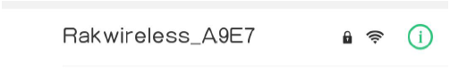
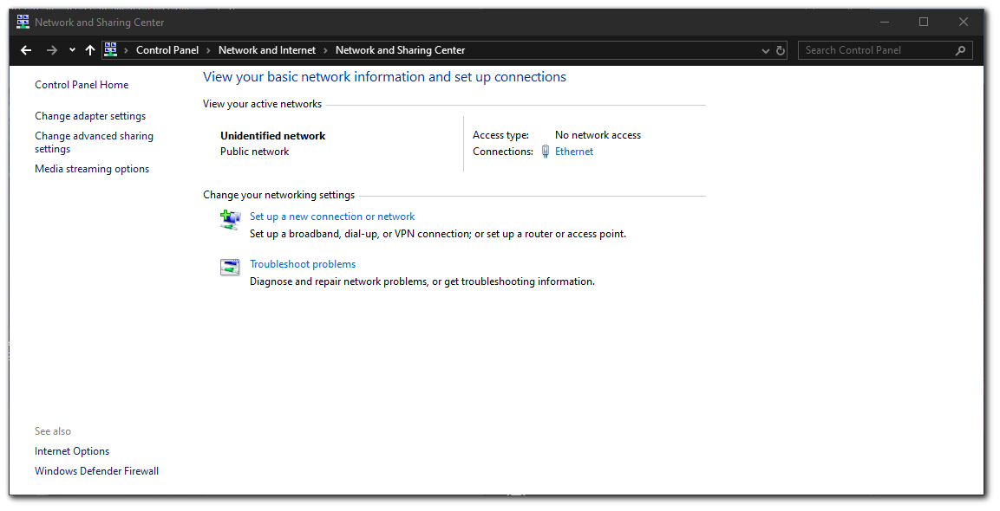
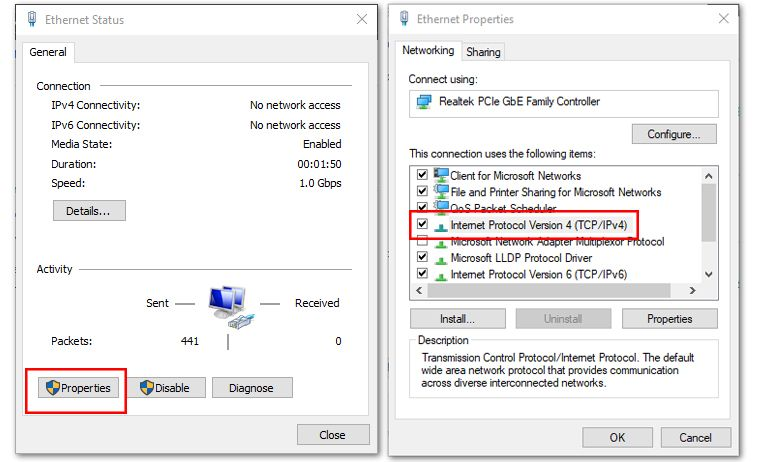
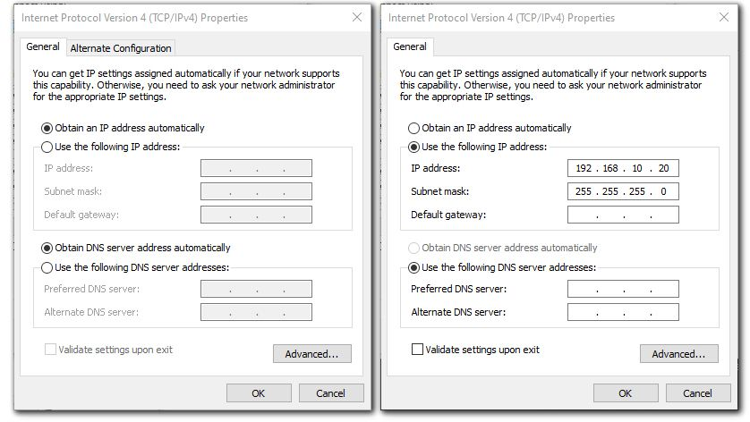
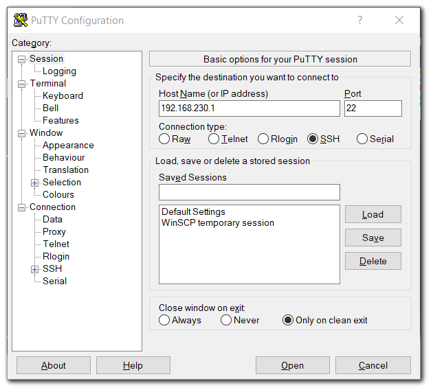
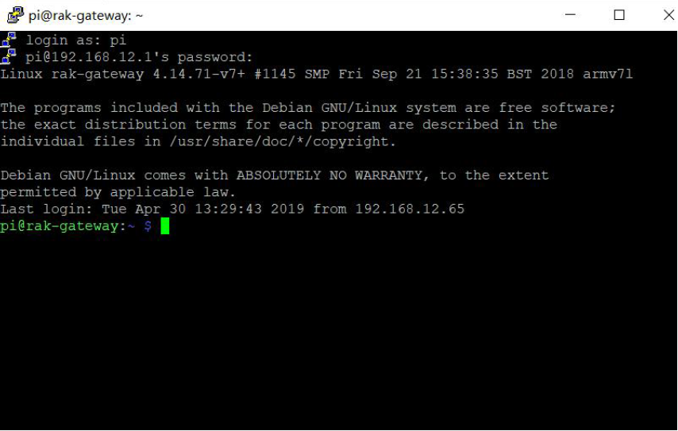
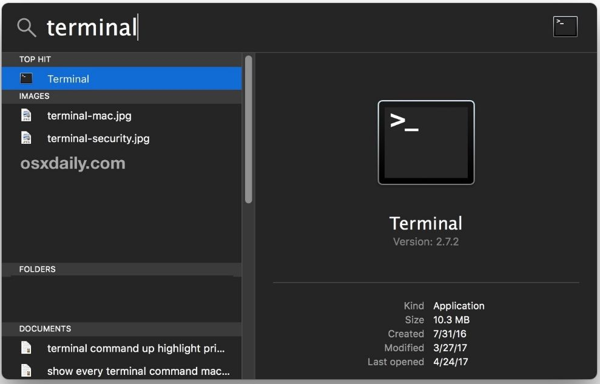
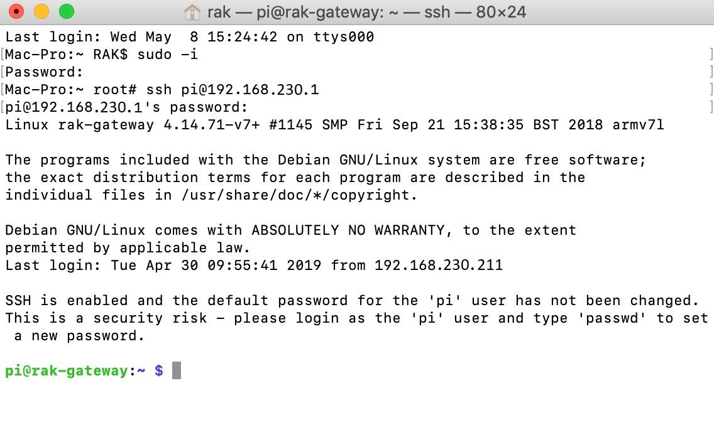

Accessing Your Gateway
Outdated: this section documents The Things Network V2, which is no longer maintained. See the documentation for The Things Stack V3, or browse the V2 docs index.
Accessing Your Gateway #
After burning the image into the SD Card, make sure you have inserted the SD Card with the Latest Firmware installed to the Raspberry Pi 3B+ / 4 with the RAK2245 Pi Hat LoRaWAN® Concentrator Module and the LoRa® and GPS Antenna attached to it. After which, you can now safely power on the gateway. In this document, several ways in accessing the gateway are provided to have different alternatives for you to choose depending on the availability of the requirements needed.
Warning: Before Powering the Raspberry Pi, you should install the LoRa® and GPS Antennas. Not doing so might damage the boards.
1. Wi-Fi AP Mode #
By default, the LoRaWAN® Gateway will work in Wi-Fi AP Mode which means that you can find an SSID named like “Rakwireless_XXXX” on your PC Wi-Fi Network List.

Note: Connect to this Wi-Fi SSID by using “rakwireless” as the default password. The default IP address of the LoRaWAN® Gateway’s Wi-Fi is
192.168.230.1. Take note of this IP address as this will be needed in connecting via SSH.
2. Via the Ethernet Port on the Raspberry Pi #
You can also connect your PC with the LoRaWAN® Gateway through an Ethernet cable. By default, the IP address of the LoRaWAN® Gateway’s Ethernet interface is 192.168.10.10, so you need to set the IP address of your PC’s Ethernet to the same network segment, for example, 192.168.10.20.
- To do this in Windows, go to Control Panel -> Network and Internet -> Network and Sharing Center and Click Ethernet

- Click Properties then Choose Internet Protocol Version 4 (TCP/IPv4).

- By default, it will obtain an IP Address automatically. Click the Option “Use the following IP Address” and enter the IP Address:
192.168.10.20and press OK.

Now , you should be able to access your LoRaWAN® Gateway from your PC successfully using the IP Address 192.168.10.10 through SSH.
Log into the LoRa Gateway via SSH #
1. Windows OS #
SSH (Secure Shell) is typically used to log in to a remote machine and execute commands. There are a lot of free and good SSH Clients out there namely Putty, BitVise SSH Client, MobaXterm and many more. Feel free to choose one that fits your needs, you will be using Putty for this guide.

- If you have connected to the LoRaWAN® Gateway through Wi-Fi AP Mode, the IP Address is
192.168.230.1 - If you have connected to the LoRaWAN® Gateway through Ethernet, the IP Address is
192.168.10.10 - It will then prompt you to enter the username and password. The default username is “pi” and the default password is “raspberry”

2. Mac OS #
Open the Terminal of Mac OS. Launch the Terminal application, which is found in “/Applications/Utilities/” directory but you can also launch it from Spotlight by hitting Command + Spacebar and typing “Terminal” and then return:

-
Open the terminal of Mac OS. Enter root mode by typing the following command:
sudo -i -
If you are not in root mode, enter
ssh pi@192.168.230.1in the terminal to login to your LoRaWAN® Gateway, the default username is “pi” and the default password is “raspberry”. -
If you connect your PC with the LoRaWAN® Gateway through Ethernet Cable, you should enter
ssh pi@192.168.10.10, the default username is “pi” and the default password is “raspberry”.

3. Linux OS #
If the OS of your PC is Linux, you should do the same as the Mac OS, except the root mode.